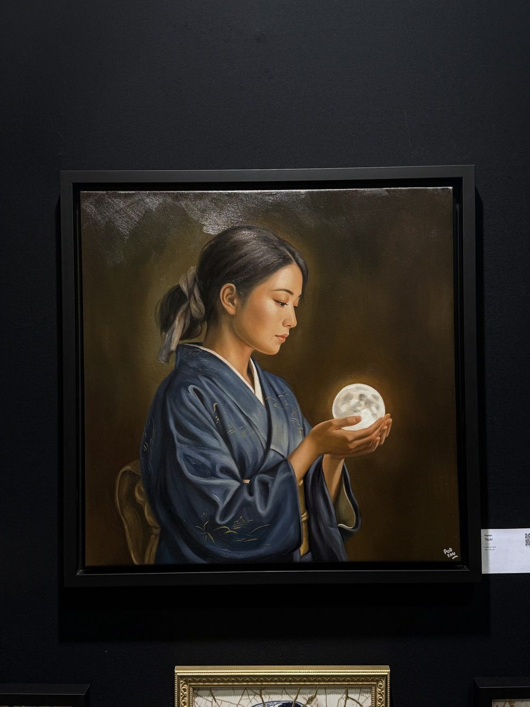

art3f Luxembourg : mon mur Popsan sur le stand de l’Atelier Joconde
Par William San, le

Du vendredi 2 au dimanche 4 octobre 2026, l’Atelier Joconde avait son stand au salon art3f de Luxembourg, à Luxexpo The Box, sur le plateau du Kirchberg. art3f est un salon international d’art contemporain ; c’était sa neuvième édition à Luxembourg, trois semaines après celle de Monaco. Les portes ouvraient le vendredi à 14 h, le vernissage commençait à 18 h, et tout se terminait le dimanche à 19 h. Sur le stand, nous étions trois signatures : mon père, Le Yack, mon frère, Neo Pablo, et moi, sous le nom de Popsan. Un des murs était le mien.
Trois toiles de nuit
Le mur Popsan s’organisait autour de trois huiles sur toile de 60 × 60 cm, chacune dans sa caisse américaine noire.
Tsuki montre une femme en kimono bleu qui tient une pleine lune au creux de ses mains. Tsuki veut dire la lune. Au Japon, septembre est le mois où l’on s’assoit pour regarder la lune sans rien faire d’autre, et c’est à ce moment que la toile fait référence.
Shūden, c’est « le dernier train ». Un homme seul attend au bord de la bande jaune d’un quai. À Monaco déjà, je la présentais ainsi : j’ai voulu peindre un homme qui peut ressembler à tout le monde, à toi, à moi, à n’importe qui sur ce quai.
Le passage de la nuit est la seule rue du mur. Une femme sous un parapluie traverse devant la vitrine allumée d’un konbini, une de ces supérettes japonaises ouvertes toute la nuit.

Sous les toiles, j’avais accroché des pièces de ma série Kintsugi : des carreaux de céramique de 30 × 30 cm dont les fissures sont rehaussées à la main à l’or. Seppun, un baiser d’après Klimt, était la seule dans un cadre doré.
Tsuki n’a pas passé le week-end au mur
Le vendredi, une heure avant l’ouverture, Tsuki était accrochée à côté du Passage de la nuit. Le samedi, sa place était vide : elle avait été vendue pendant le salon, et elle est aujourd’hui dans une collection privée.

C’est la troisième toile de la série partie en exposition en moins d’un mois. À Monaco, Akari et Kingyo avaient déjà trouvé preneur.

Un père et ses deux fils
Un salon, pour nous, c’est d’abord un stand en famille. L’enseigne ronde porte la signature de mon père, et autour d’elle on trouvait ses toiles, celles de Neo Pablo et les miennes. Le Yack peint des scènes baignées d’une lumière à la Hopper : derrière nous, sur la photo d’ouverture, un couple des années 1940 s’appuie contre un avion de chasse. Neo Pablo, lui, peint à l’acrylique. Neo Pablo tient à rester anonyme : sur les photos, il porte son masque de renard, que nous ajoutons à l’image quand il n’est pas sur son visage.
Pendant le week-end, un visiteur s’est arrêté pour nous dire qu’il nous avait déjà vus, dans un journal au Luxembourg. On ne vient pas sur un salon que pour vendre. On y vient aussi pour que des inconnus retiennent nos noms, et parfois ils les ont retenus avant nous.
La prochaine étape est art3f Bruxelles, en novembre.